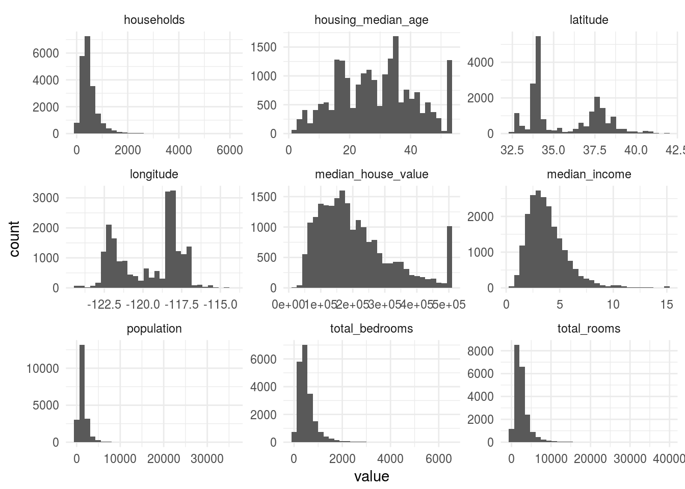

Chapter 2 Exploratory Data Analysis and Feature Engineering
Import your favorite libraries and set up your favorite plotting theme.
library(tidyverse)
theme_set(theme_minimal())Now let’s import some data. Our data source is 1990-census level of housing in California.
We’ll use easy the readr package to load in our data. You could equivalently use read.csv, or data.table::fread if you wanted incredible speed. We’ll later see how to use data sources using the RevoScaleR readers.
Since we’re using readr, our data is a tbl. This means we will get some dplyr and tibble features, and it’ll behave a little differently than a traditional data.frame.
housing <- read_csv("data/housing.csv")
class(housing)## [1] "tbl_df" "tbl" "data.frame"glimpse(housing)## Observations: 20,640
## Variables: 10
## $ longitude <dbl> -122.23, -122.22, -122.24, -122.25, -122.25...
## $ latitude <dbl> 37.88, 37.86, 37.85, 37.85, 37.85, 37.85, 3...
## $ housing_median_age <dbl> 41, 21, 52, 52, 52, 52, 52, 52, 42, 52, 52,...
## $ total_rooms <dbl> 880, 7099, 1467, 1274, 1627, 919, 2535, 310...
## $ total_bedrooms <dbl> 129, 1106, 190, 235, 280, 213, 489, 687, 66...
## $ population <dbl> 322, 2401, 496, 558, 565, 413, 1094, 1157, ...
## $ households <dbl> 126, 1138, 177, 219, 259, 193, 514, 647, 59...
## $ median_income <dbl> 8.3252, 8.3014, 7.2574, 5.6431, 3.8462, 4.0...
## $ median_house_value <dbl> 452600, 358500, 352100, 341300, 342200, 269...
## $ ocean_proximity <chr> "NEAR BAY", "NEAR BAY", "NEAR BAY", "NEAR B...housing## # A tibble: 20,640 x 10
## longitude latitude housing_median_age total_rooms total_bedrooms
## <dbl> <dbl> <dbl> <dbl> <dbl>
## 1 -122.23 37.88 41 880 129
## 2 -122.22 37.86 21 7099 1106
## 3 -122.24 37.85 52 1467 190
## 4 -122.25 37.85 52 1274 235
## 5 -122.25 37.85 52 1627 280
## 6 -122.25 37.85 52 919 213
## 7 -122.25 37.84 52 2535 489
## 8 -122.25 37.84 52 3104 687
## 9 -122.26 37.84 42 2555 665
## 10 -122.25 37.84 52 3549 707
## # ... with 20,630 more rows, and 5 more variables: population <dbl>,
## # households <dbl>, median_income <dbl>, median_house_value <dbl>,
## # ocean_proximity <chr>2.1 Visualize Densities
Suppose we want to visualize the distribution of the numeric columns, such as housing_median_age. How would you visualize that density?
housing %>% keep(is_double) %>%
gather %>%
ggplot(aes(x = value)) + geom_histogram() + facet_wrap(~key, scales = "free")## Warning: Removed 207 rows containing non-finite values (stat_bin).
2.2 Spatial Visualizations
The histograms of the longitude and latitude columns seem like they are in some reasonable range of data. Let’s visualize the locations.
housing %>% ggplot(aes(x = longitude, y = latitude)) +
geom_point()Looks indeed like California!
We can improve this chart in many ways. Let’s first add some transparency so we can get a better sense of the density of points:
housing %>% ggplot(aes(x = longitude, y = latitude)) +
geom_point(alpha = 0.15)Nice, we can already see some dense clusters for higher population regions like the Bay Area, Sacramento and Los Angeles.
Let’s add some additional attributes, like the population:
housing %>% ggplot(aes(x = longitude, y = latitude,
size = population)) +
geom_point(alpha = 0.15)And now let’s see if we can add a gradient fill for another numeric value, like the median housing price:
housing %>% ggplot(aes(x = longitude, y = latitude,
size = population,
colour = median_house_value)) +
geom_point(alpha = 0.095)Interesting, we can definitely see the higher price ranges in LA and the Bay Area. Let’s see if we can change the colour scheme to get an even better visualization:
housing %>% ggplot(aes(x = longitude, y = latitude,
size = population,
colour = median_house_value)) +
geom_point(alpha = 0.095) +
scale_colour_gradient(low = "yellow", high = "red")If you want to plot the points on top of an actual polygon of the state map, you can do that using geom_map and using the map_data function in ggplot2. I find it a bit messy, but it might be worthwile if you are plotting various regions/states.
While we’re at it, let’s put some final themes on our plot to make it more aesthetically pleasing.
housing %>%
mutate(state = "california") %>%
ggplot(aes(x = longitude, y = latitude,
size = population,
colour = median_house_value)) +
geom_map(map = filter(map_data("state"), region == "california"),
aes(map_id = state),
fill = "lightgrey",
colour = "lightgrey") +
geom_point(alpha = 0.1) +
theme(panel.grid.major = element_blank(),
panel.grid.minor = element_blank()) +
scale_size_continuous(labels = scales::comma) +
scale_colour_gradient(low = "yellow", high = "red",
labels = scales::dollar)2.3 Exercises
- How does proximity to the ocean effect median house values? Try to visualize housing prices the above using the ocean proximity variable as the colour/fill aesthetic and median_house_value as the size aesthetic.
- We saw that faceting could allow us to compare distributions rather easily. Try a facetted plot where you facet by quantiles of the
median_incomecolumn. This will allow you to compare the distribution of housing values, populations/demographics across different income groups. Thedplyr::mutate,stats::quntile, andggplot2::facet_wrapfunctions should be useful here.